| 「学生デビュー」「社会人デビュー」表と裏のオキテ | |
| Unknown | |
新入生＆社会人必読
「学生デビュー」
「社会人デビュー」
表 と裏 のオキテ
大学、専門学校、会社......。これから進む新しい社会には知られざるオキテ がいっぱい。そこで、春デビューに失敗しない ための方法を先輩たちから徹底調査！ やさしい言葉の裏の意味 までしっかり読めば、デビュー戦から負けなし です！
◎
学校案内＆会社案内には書いてない！
キャンパス＆オフィス
知っておきたいオキテＭＡＰ
大学、会社には目に見えないオキテ がいっぱい。知ってると、知らないとでは、デビュー戦に大きな差 が出るはずです。いざ、ナビ ！
気を抜けないディープスポット多数

ついに社会人の仲間入り！ 会社の規模はさまざまあれど、外からわからない共通のルールがある。会社概要は「外」要。早く自分の職場になじむためにも内部を知ろう！
＊＊＊＊＊＊
今も昔もウワサの発信元はすべてココ！
一番精神を研ぎ澄ますべき場所！ ココで繰り広げられる会話の数々には先輩の本音があふれている。必要以上に会話に入り込むことはないが、無視するのも嫌われる原因になりかねない。
タバコは25
才すぎてから！ が常識デス！
タバコは喫煙所でのみという会社がほとんど。しかし、「新人がタバコなんて」という人も多いので、「えっ？ タバコ吸わないの？ 一緒に喫煙所行こうよ」って先輩に誘われるまでは、新人は全館禁煙！
正面玄関は来客用。普段は使用すべからず！
正面から入社できるのはリクルートまで。もうこれからはお客さんじゃないのです。裏の社員口から入り、来客者に備え、ウエルカム態勢を整えるのが常識です。
ポーチ置き場には暗黙のルールがあり！
会社の女子トイレでは歯磨きセットや化粧ポーチを置く棚やロッカーが設けられているところが多い。これを手に入れたいならば、先輩上司に「連れション」に誘ってもらいましょう。
めったなことでは入室できないおエライさん用
［上で決めたもの］「上層部」の「上」とは役職だけじゃなく働く階も上ってこと。一般的に役員室は最上階にある。出世しなければ、入社式で辞令を受け取って以来、一度も入ることなく定年退職ってことも。
エントランス
や来客待合室
は誰に見られているかわからないから、周囲に最大限注意
を払って。また、警備員
さんや清掃のおばさん
とは仲よくしといて損なし！ 重要な情報を握ってる場合があります。
◇◇◇◇
「社会人デビュー」に
必要なモノランキング
手帳
２位
名刺入れ
３位
社内サンダル＆ストール
１、２位は定番。３位は会社にもよるけど、社内勤務が多い人はマストという声が多数。「冷暖房のききすぎで、体調をくずしやすいから」（高井恵さん 商社３年目）など。
自由奔放に見えても暗黙のルールが！
楽しようと思えばいくらでもできるのが大学。ルールがないのがルールなんて人もいるけれど、知らなきゃ困るオキテはあるんです。ステキな大学生活に向けてスタートダッシュ！
＊＊＊＊＊＊
最前列の席！のコにアプローチすべし！
ガラガラの授業でも一番前に座り、カリカリノートをとるマジメな学生。その人と仲よくなって、テスト前にノートを見せてもらいましょう。それこそがカンペキな参考書になります。
テーブルは部活、サークルごとの指定制
なんで毎日毎日、同じ人が同じところに座っているの？と思ったその裏には暗黙の指定席が。部活、サークルごとに代々引き継がれた席がある。どこかの団体に所属するまでは、利用できない場合もある。
試験前のコピー機は長蛇の列！
試験直前にコピーが必要なときは、図書館で並ばずに、近くのコンビニなどで穴場を見つけ出しておくのが大事！って、そんなふうになる前に、しっかり勉強しとけばいいんだけど。
勧誘には怪しい人もまぎれてる場合あり！
インカレ（学校外）サークルの勧誘にまぎれて「芸能界に興味ありませんか？」「安い旅行行きませんか？」って人もちらほら。名刺を持っている人なら安心という考えは絶対危険です！
ほとんどのサークルに専用の部室はない！
高校とはケタ違いに数のある大学のサークル。ココに専用の部屋があったら土地がいくらあっても足りません。専用の部室があるのは学校認定の体育会などのごく一部だけ。
大学生協
や購買部
では、本やＣＤが１～２割引ってことが多いので、これを利用しない手はない！ また学生課
では、家庭教師のバイト情報や近所のオススメ物件情報が入手できるのでマメにチェック
を。
◇◇◇◇
「学生デビュー」に
必要なモノランキング
パソコン
２位
i Pod
３位
デジカメ
１位は不動のパソコン。レポートなどもネット経由で提出という場合もある。２、３位は通学や待ち時間に便利というのが理由。ほかには合宿用のボストンバッグなど。
◎
可愛がられる新人になるために！
シーン別
先輩＆上司とのつき合い方ガイド
学校でも会社でも、もちろんバイト先でもせっかくなら可愛がられる新人 になりたいもの。ここでは、いざってとき に困らないための対応策をレクチャー します。
社会人読者が教える！新人のルール
学生にはわからない本音と建前。そんな不安を社会人１～５年目の先輩たちが教えてくれました。バイト先で生かせるノウハウもあり！
◇◇◇◇
《日常業務編》
裏の意味をしっかり読んで先回り
今でもやっぱりお茶くみってあるんですか？
古い習慣が今でも消えない会社もあり
残念ながらまだまだ健在。でも、お茶くみはある意味、気に入られるチャンス。スプーンを出す場合、持ち手を左に置くことをお忘れなく。（田中寛子さん メーカー勤務３年目）
自分の席以外の電話も取るべきなの？
新入社員はすべての電話を取るくらいの意識を！
電話を取ることはもはや新入社員の最大の仕事。メモを準備して、３コール以内で取るのが目標です。数をこなさないと慣れないから、積極的に！（秋田優子さん 公務員２年目）
社内メールを利用して友達に連絡ってありですか？
プライベートなメールは厳禁！
すべてのメールをチェックする会社もある。仕事とプライベートはしっかりと分けて行動して。まあ、見られてもいいならかまわないけど。（加藤藍子さん 商社勤務１年目）
ぶっちゃけ、社内恋愛ってありなんですか？
特に問題なし！しかし気遣いは必須
法律的には恋愛は自由。でもＯＮとＯＦＦの切り替えが大切です。「実は私たち結婚します」というまで誰も知らないといったケースもあります！（小栗瑤さん 公務員３年目）
お局上司と仲よくする秘訣ってありますか？
ゴマすりって思われない程度に積極的にすり寄るべし
いじめられても泣いちゃダメ。女上司に、涙は逆効果。近寄りがたくても積極的に話しかけて「今どきの若者にしては珍しい」といわせたら勝ちです！（近藤奈都子さん 銀行員２年目）
急ぎの仕事中に別の仕事を上司に頼まれたら？
テンパらずに優先順位をきちんと聞いて進めて！
できないのに「はい、わかりました」ではかえって迷惑かけるけど、断るのもどうかと思う。優先順位を確認して、「○時までにやります」と具体案を。（神田愛さん 商社４年目）
先輩にプライベートなおつかいを頼まれたら断ってもいいの？
可愛がられるためのチャンスと思って
気に入られるためならどんなことでもやろう！ といいたいけれど、どうしても割り切れないのならば、さらに上の人に相談するしかありません。（平野郁美さん 旅行勤務２年目）
◇◇◇◇
《飲み会編》
無礼講のホントの意味を知ろう！
飲めないのに「飲め！」といわれたらどうしたらいいの？
最初の１杯は頑張ってそこからは断り上手になろう
乾杯のグラスは口をつけるのが礼儀というものです。そこからは「この雰囲気で十分酔ってます」といったウマイ断り文句を用意しておくと場を乱しません。（神部咲さん 建築１年目）
接待とかのお酌ってどうすればいいんですか？
お酌ひとつにも上司に気に入られるマナーがある
「ラベルは上。ビール７泡３」。これ常識。注いだビールが泡だらけでは、恥ずかしい。飲み会作法に慣れるのも可愛がられるための近道！（南祥子さん 損保勤務２年目）
所属する部や課での飲み会って割り勘ですか？
歓迎会はもとより、新人は意外と出してもらえるかも
先輩方が出してくれることもあります。ただし、感謝を忘れちゃダメ。店を出たときはもちろん、翌日も「ごちそうさまでした」とお礼を。（山田恵さん 印刷勤務４年目）
アフター５の飲み会に誘われたらどうしたらいいの？
〝飲みにケーション〟という言葉も！できる限り参加したほうが◎
社内の飲み会は職場コミュニケーションの延長。できる限り参加したほうがその後のため！ 断るなら説得力ある理由を。（依田愛さん 食品勤務２年目）
会社でカラオケ行くときって新人も歌っていいの？
ＯＫ！ ただし上司の持ち歌は絶対事前チェック！
マイク離さずも、ずっと歌わないもＮＧ。みんなが知ってる曲で盛り上げて。上司の持ち歌は、避けるように調査が必要。（伊藤優さん 出版社勤務５年目）
◇◇◇◇
《セクハラ編》
スマートに避けるのが基本！
胸や脚をジロジロ見られてたら、それってセクハラ？
法律的には十分でも相手との関係を考えて
見られるってだけでも、女性側からすれば苦痛なもの。でも、相手が無意識の場合もあるから、行動は慎重に。身近な女の先輩にまずは相談を。（佐々木恵子さん 百貨店勤務４年目）
週末に２人で会おうって誘われたら断っちゃダメ？
もちろん嫌なら断って！ 優柔不断は最悪
「今週はちょっと予定が......」とかあいまいな断りを続けると、かえってマイナス。意志をキッパリと伝えるのが、相手のためでもあります。（松本沙弥香さん コンサルティング会社勤務３年目）
下ネタ連発の下品なオヤジが耐えられない。
いやがればいやがるほどエスカレートしちゃいます
私の上司にもいますが、下ネタ好きなオヤジはたいてい、その反応を楽しんでいるんです。サラリと流すのがいちばんの対応策だと思います。（濱田美恵子さん 航空会社勤務２年目）
彼氏いるの？と聞かれたら正直に答えるべき？
必殺！オウム返しで反撃したら？
「いるように見えますか？」とか「○○さんこそ彼女いないんですか？」とか返し、話をそらすテクを。その程度でセクハラって騒いでちゃカラダがもちませんよ。（林亜弥さん 商社４年目）
◎
学生時代はＯＫでも社会人では許されない
10 の
知ってそうで知らない、社会の常識をピックアップ 。新社会人 はもちろん「へぇー、そうなんだぁ」と思った現社会人 は復習を！
01
ハチ公前で待ち合わせ
天候に左右されず、座って待っていられる場所がベストです。さて、あなたがいつも使っている待ち合わせスポットはビジネスシーンでも通用するところでしょうか？
02
自分の席でメイク直し
お化粧室って名前がついている場所がお化粧する場所です！ 通学の電車の中でも平気でメイクをしてしまう人は今のうちに注意を。
03
ＰＣの壁紙をカスタマイズ
ＰＣは会社ではパブリックコンピューター！ 私物ではありません。使わせてもらっている意識を忘れず必要以上なことは厳禁。
04
休日を利用してバイトする
会社員とはその会社に属しているということ。自宅のお手伝いは別だけど、かけ持ちという言葉は社会人にはない！ アルバイトはもちろんサイドビジネスもＮＧ。
05
エレベーターには出入りの邪魔にならない奥に入る
先に入って素早く操作盤の前のスペースをゲット！ コレが新人のエレベーターのオキテ。「何階ですか？」と聞く心遣いを。
06
「山田先輩！」と先輩呼びする
転職先の上司をよく見たら大学の後輩！ こんなことも珍しくない。会社ではもはや年令は関係なし！ さんづけか役職で呼ぶか、職場に合わせて使い分けて。
07
飲み会では吐くまで飲む
いくらすすめられても、つぶれてはダメ。そのためには自分の酒量を知っておくべき。「酔って意識がなかったんです」じゃすまないこともあります。
08
「無題」「Re
：」でメールを送る
無題は失礼。具体的でわかりやすい件名で用件を伝えて。本文の最後に署名を入れることも社会では常識。今から携帯メールでも実践！
09
仕事が終わらなければ残業。終わるまでは帰らない
本来、残業は就業外勤務。上司の指示か許可が必要なんです。ただ指示が出たら断れない。新入社員のプライベートの「予定」は「未定」と思っておこう。

10
暑くなってきたから上着を脱いで、ノースリーブになる
肩の露出は社会人でＮＧ。ましてやチューブトップなんて論外！ そんなインナーのときは絶対上着を脱いじゃダメ。セクハラ防止のためにも有効です。
覚えておきたい！
愛されるビジネス常識
会社や組織によって厳しい、ゆるいの差はあるけど、覚えておけば安心です。愛される新人＝できる新人ってワケなんです。
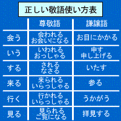
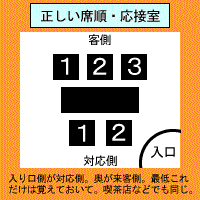
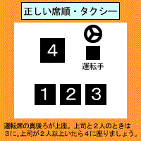
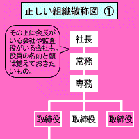
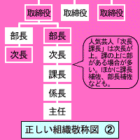
◎
初日のファッションですべて決まる!?
進路別
デビュー服のオキテ
新環境には第一印象が肝心 ってことで、現役学生・社会人にアンケート を敢行。デビューにふさわしい正解ファッション を導き出しました！
◇◇◇◇
【共学四大進学の場合】
カンタンすっきりおだんご
春らしいキレイ色パーカ
適度にこなれたレザートート
上品ハーフパンツ
何にでも合うローヒールパンプス
［先輩からの
アドバイス
］
デニムはダボダボよりジャストサイズのほうが男子の人気が高い。（佐藤郁美さん Ｙ大学２年） 男子と一緒に騒げるローヒール靴が鉄則！（Ａ・Ｈさん 明治大学４年）
安っぽい甘すぎボレロ
おさがりブラバとショップＢＡＧの２コ持ち
透けすぎひらミニ
地味なピンクヒール
［先輩からの
アドバイス
］
モテを意識しすぎて甘めトップスを着ていったら不評だった。（Ｔ・Ｍさん 法政大学３年） 生脚のコがほとんどだから、ストッキングをはくだけでＮＧ。（佐々木綾香さん Ａ大学２年）
◇◇◇◇
【短大or
女子大学進学の場合】
トレンドのショート丈ジャケット
最新コレクションバッグ
ふんわりバルーンワンピ
シンプルな７～８cm
ヒールパンプス
［先輩からの
アドバイス
］
デニムミニはありだけど、デニムショーパンはＮＧ。（伊藤文恵さん Ｓ女子大学２年） 急なコンパがあっても大丈夫なようにヒール靴はロッカーに。（田中琴美さん Ｊ女子大学４年）
おしゃれすぎメガネ
型くずれしたゆるトップス
男のコブランドのナイロンショルダー
ノーブランドのカラーデニム
はきこまれたボロスニーカー
［先輩からの
アドバイス
］
派手なイメージだったのでスーツに巻き髪でいったら、カジュアルな人が多くて浮いた。（Ｓ・Ｏさん Ｔ大学１年） スポーツバッグは避けるのが無難。（神崎圭さん Ｋ短期大学２年）
◇◇◇◇
【ファッション系専門学校進学の場合】
インパクトヘア
コレクションラインのデザイントップス
ひとクセありのデニムショーパン
一点もののクラッチバッグ
［先輩からの
アドバイス
］
派手な人が多い中目立つには一点モノやインパクト小物がオススメ！（Ｕ・Ｙさん 文化服装学院２年） オシャレ上級者は必ずコレクションものをＭＩＸ。（木嶋杏さん Ｔ専門学校）
子供っぽすぎなヘア
古着のミリタリージャケット
ゴツすぎるデジタルウォッチ
自作した個性派デニスカ
一年中はいてるワークブーツ
［先輩からの
アドバイス
］
同ブランドで身を固め、個性を主張する友達は見ていて痛い。（Ｈ・Ｋさん 文化服装学院３年） キャミ１枚だと先生から注意される。（朝枝千春さん 日本美容専門学校２年）
◇◇◇◇
【社会人デビューの場合】
きっちりとまとめ髪
キレイ色のシンプルコート
Ａ４が入るかっちりレザーバッグ
クールすぎない白ブラウス
歩きやすい５cm
パンプス
［先輩からの
アドバイス
］
おしゃれに自信がないならとりあえずスーツがオススメ。（浅賀なぎささん テレビ局勤務） 高そうな服は生意気に見られがちだから避けて。（水野葵さん 住宅メーカー勤務）
キャスケットなどのかぶりもの
だらしなく見えちゃうロングカーデ
荷物がほとんど入らないミニかごバッグ
レギンスもしくはカラータイツ
脱ぎはきがしづらいレースアップパンプス
［先輩からの
アドバイス
］
おＮＥＷなクツで初出勤したら歩けないくらいの靴ずれに。（杉田心さん 旅行代理店勤務） デニムＯＫなのに、実際はいていくと冷たい視線。（Ｙ・Ｍさん 金融勤務）
◎
入学、入社直後のミスにご用心！
嗚呼無念！
私のデビュー失敗談
新人なんだから知らないのは当たり前 、当然ミスもする。とはいっても、最小限 に失敗はおさえたい 。ここでは、先輩たちの恥ずかしい失敗秘話 を大暴露します。
新歓コンパ会場で合コン中の彼と遭遇！ まわりが引く修羅場に発展。
（前田園加さん Ｓ大学１年）
Ｍ先輩から「なにか困っていることはない？」と聞かれ、「実は○○主任にしつこく誘われてるんです」と答えたら、その「○○主任」こそＭ
先輩の社内恋愛中
の彼
と判明。この後の展開は怖くて聞いてません。（大田かなみさん 商社・１年目）
内定していた会社が、入社する目前になんと倒産!!
失敗というかデビューすらできなかったわけで......。
（木村彩香さん フリーター・１年目）
歓迎会の日、酔ってすり寄ってきた部長を思わずビンタ!!
ヤバイ
（Ｋ・Ｍさん 金融・３年目）
ＯＬっぽいコンサバ服を大量に買ったのに、まわりは思いっきりカジュアルだった。
（井上雅美さん アパレル・１年目）
インカレ
（＝インターナショナルカレッジ）を国際交流サークルだと思ってた私。なんかチャラ男が多いと思ったときにはすでに遅かった。ちゃんと〝学外ナンパサークル〟って名乗ってよ。（小田聖さん Ｋ女子大学１年）
大学の近所のマンションに入居。アッという間に自分の部屋がたまり場
と化し、プライベートな時間ゼロ!!
（遠藤みちるさん Ｍ大学２年）
昔から人より大人っぽい
といわれる私。それがうれしくて、大学でも大人っぽい格好やふるまい
で通していたら、みんなから敬語を使われるように
。どうやら社会人入学
だと思われていたらしい......。（藤原江里子さん Ｏ短期大学２年）
優柔不断でなんに対しても「ＮＯ」といえない私。気づけば大学のサークルを12
個もかけもち
するハメに!!
しかもやめるともいいづらい雰囲気。自業自得とはいえ、忙しすぎます（涙）。全然楽しくないし、何やってんだろ。（井元美保さん Ｍ大学２年）
◇◇◇◇
『入学式からの積極行動が裏目に出ました』
冨岡遼子さん Ｗ大学２年
大学の入学式当日。同じ学部でひときわ長身のイケメンくんを発見！ スーツも似合っていて、まさにひと目ぼれ状態 こんなにイイ男は絶対に争奪戦必至だろうと、先手を打つべく入学式後、ソッコーで「一緒のサークルに入らない？」と告ってみると、なんとその場でＯＫ!! これは大学生活は楽しいぞ～と思っていたら、翌日愕然......!! 昨日の王子様がなんと私服ダサダサ＆方言丸出し ......。見事スーツマジック にしてやられました。
◇◇◇◇
『内定から入社式まで６カ月その間に悲劇が......』
田中杏実さん 保険・３年目
内定後、ストレスから解放されたせいなのかドカ食いをしてしまい、なんと面接時から＋15 kg 以上も太って しまいました。入社式では面接してくれた上司も「おまえ誰だ？」状態 。用意してくれてた７号の制服も入らず、13 号にチェンジ ......。入社前は私の写真を見て男性社員一同期待 してたらしく、知らず知らず裏切っていたらしい。知るかっ!! 私だって太りたくて太ったわけじゃないんだもんっ（涙）!!
◇◇◇◇
『１に電話、２に電話......でも取ればいいだけじゃない』
三好彩香さん 広告・３年目
入社後１カ月、ようやく社内の人の名前を覚え始めた頃 受けた電話の話です。
「宇都宮さんいらっしゃいますか？」という先方の問いかけに、私は社内を見渡し、自信満々に「あいにく弊社にはそのような名前のものはいないのですが......」と回答。電話を切り、「宇都宮なんて人、うちの会社にいないですよねぇ～あはは」というと、なぜかまわりがざわざわ 。すると突如「あなたは知らなかったでしょうけど、私の離婚前の名前は宇都宮 だったの。今度から取り次いでね♪」とわざと明るくふるまう先輩 の姿が......。顔面蒼白で倒れそうになりました。どうやら私の入社直前に離婚 して名字をかえていたとのこと。そんな大事な情報、隠すなよ～（涙）!!
◎
これだけ違う！
学生カップル＆社会人カップル
恋愛ルール
学生と社会人、環境が変わればつき合い方も変わる ！ そこで読者カップル、男女別々にアンケートを実施し、ルール や本音 を赤裸々 に語ってもらいました。新生活の参考にしてみては!?
カップルＲＵＬＥ
♂
学生
×♀
学生
毎晩必ず電話すること会えない日もお互いの出来事は報告！
中川知彦
クン（横浜国立大学 大学院２年）
瀬野未知
さん（女子美術大学２年）
カップルＤＡＴＡ
交際歴／２年４カ月 つき合ったきっかけ／地元の名古屋にいたときのバイト仲間。彼女のひと目ぼれだったが、好きオーラを察した彼から告白。
我慢強いカップルの意外なルールとは？
早くも社会人生活をイメージして今後のルールを決めたという２人。「彼が４月から社会人なので、会う回数を減らすことにしました。週末しか会えないと思うので寂しさに慣れておこうと」。ずいぶんストイックな考えだけど、以前から無理なつき合いはしないと決めていたようで、忙しいときは２週間会わないこともザラだとか。そのかわり毎晩電話でその日の報告をすることは欠かさない。「それでもデートが待ちきれないときは、夜に突然彼の家に行くこともあるんです」と、翌日を気にせずお泊まりデートができるのは学生ならでは。しかしせっかく泊まっても朝に弱い彼のせいで出かけられないそう。もっと平日デートしたり学生ならではの恋愛を満喫したいのが彼女の本音です。
まだまだある２人のルール
どちらか忙しい日は会うのを我慢する。映画代は彼が負担する。旅行資金を一緒に貯金。
◇◇◇◇
カップルＲＵＬＥ
♂
学生
×♀
社会人
時間に余裕のあるほうが予定を合わせる（ほぼ彼に決定）
宮下祐人
クン（東京福祉保育専門学校３年）
鮫島香奈恵
さん（販売員・21
才）
カップルＤＡＴＡ
交際歴／１年 つき合ったきっかけ／音楽イベントで出会い、彼がひと目ぼれ。その後彼から告白。
完全に僕が尻に敷かれています（笑）
姉御肌の彼女にやさしそうな彼。「彼女は同じ年なのに社会人なのでしっかり者。主導権を完全に握られているんです（笑）」と話すように、彼は普段から彼女にやられっぱなし。「仕事から疲れて帰宅して、ぐうたらしている姿を見るとカチンとなりますね。頼りがいないし学生とつき合うメリットはないですよ」と彼女からはいきなり爆弾発言も飛び出す。とはいえ呼んだら来てくれるやさしいところは好きなようで彼も学生の時間の融通がきくという特権を生かして彼女に会いにいく。彼が彼女に合わせるというのが２人の最大のルール。そこへ「呼ばなくても来るんですけどね」とさらなる彼女の追いうちが。仕事に忙しい彼女のご機嫌取りはこの先も続く......。
まだまだある２人のルール
プライベートを守るためあまり深く干渉しない。ケイタイを見るなんてもってのほか！
◇◇◇◇
カップルＲＵＬＥ
♂
社会人
×♀
学生
少ない休みを有意義な時間にするためスケジュール管理をしっかり
林桂三
クン（会社員・23
才）
玉木舞子
さん（東京学芸大学４年）
カップルＤＡＴＡ
交際歴／１年８カ月 つき合ったきっかけ／カナダ留学中、語学学校で知り合い、帰国後友達期間を経てから交際スタート。
お互いの週末の予定はしっかり把握！
彼が社会人になってから翌日の仕事に影響する深夜デートはなくなり、会う回数も週３から週１に減ったと嘆く彼女。「でも事前に予定を報告し、時間を有効に使ってめいっぱい遊ぶようになりました」と、いい変化もあった。今までは遊ぶ約束をしても夕方から違う用事を入れてケンカになったり、いつでも行けると思い延期した場所に結局行かなかったり、ということが多かったという。ほかにも会う時間が減った分、金銭的余裕が出てきたのでお店のグレードを上げてリッチな食事をするなど楽しみも増えた。その際、社会人としてお店に行く前に予約するのは基本らしい。「予約するのはいつも私だけど（笑）」と彼女。
まだまだある２人のルール
仕事で出会った人は彼女に報告する。仕事相手でも女性と２人きりで会うのは×。
◇◇◇◇
カップルＲＵＬＥ
♂
社会人
×♀
社会人
どんなに忙しくても21
時以降は家に帰り食事の時間を作る！
佐久間正之
クン（会社員・24
才）
永井美香
さん（グラウンドホステススタッフ・26
才）
カップルＤＡＴＡ
交際歴／４年（同棲中） つき合ったきっかけ／大学の講義中にペンを借りた彼に彼女がひと目ボレ。２カ月間の友達期間を経て交際が始まった。
同棲しても会えない時間が多いと意味ない
つき合って４年になるので、たいていのことは話し合ってきた。しかし問題は、同棲しているのにすれ違いの生活をしていること。仕事柄、彼女は午前３時起き、彼は６時起きと生活サイクルが異なるので、まったく顔を合わせない日もあるとか。それを解消するために、残業がなければ21
時までに家に帰るということをルールにした。「仕事で疲れているせいか家でまったり過ごすデートが増えました。家で彼女の手料理を食べているときが最高に幸せなんですよ」と彼が話すとおり、２人にとって大切な時間になっている。その分、外食するときは奮発するようになり、同棲ながらもメリハリのついたデートを楽しんでいる。
まだまだある２人のルール
翌日に影響のでることはしない。月に１回気合いを入れた服装で銀座デートする。
彼女
は学生
か社会人
どちらがいい？
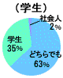
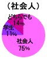
たまたま社会人だっただけのこと。好きになるのに関係ないですね
［彼女は社会人］ 近藤浩人クン（東洋大学４年）
彼氏
は学生
か社会人
どちらがいい？
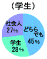
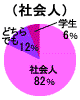
◎
男女共に、どちらでも構わないという人が多数。つき合うのに特に重要ではないそう。ただしつき合いやすいという点から、自分と同じ環境と生活ペースの、同士を求める人が多い。
デートの行き先は？
（学生彼の場合）
学食や図書館など学校内
２位
渋谷・原宿辺りをぶらぶら散歩
３位
どちらかの家でまったり過ごす
◎
お金を使わずに楽しむデートが大半。お互いの学校に出入りし空き時間はデートにまわす人も多く、一緒にいる＝デートという考えが学生ならでは。
小口祥平
クン（日本大学１年）
目的地は決めずに散歩しています。安くておいしい店を足で探すって感じですね
（社会人彼の場合）
ドライブでちょっと遠出
２位
おしゃれなレストランや居酒屋
３位
映画館など静かなスポット
◎
移動手段が電車から車に移り、行動範囲が広がったことが学生との大きな差。遊ぶ時間が限られているので目的なくダラダラするという過ごし方はしない。
太田晃紀
クン（会社員・24
才）
新川麻沙美
さん（会社員・23
才）
ファストフードやファミレスは卒業して、雰囲気重視のおしゃれな居酒屋デートが多いですね。ゆっくりとる食事に大人を感じます
＊＊＊＊＊＊
◇
学生
ならでは
社会人
ならではのデートを教えて!!
《学生》
平日に買い物三昧。
（宮本祐希さん 駒沢女子大学２年）
学割を使って映画鑑賞！ 学生の特権は使いまくります。
（新堀倫子さん 和洋女子大学４年）
混雑する昼の時間帯を避け、彼女と学食デート。
（寺内康人クン 東京学芸大学２年）
圓山晃人
クン（東京福祉保育専門学校３年）
同じ学校なのでいつも一緒。構内にいても離れてれば連絡取り合いますよ
《社会人》
銀座でちょっとリッチに食事。
（佐久間正之クン 会社員・24
才）
競馬が週末の楽しみです♪
（白石真弓さん ＯＬ・24
才）
デートコースにマンション見学。結婚を意識しちゃいました。
（野田菜月さん 東京学芸大学４年）
デートの費用はどちらもち？
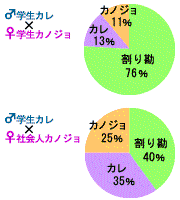
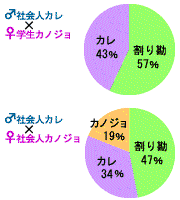
◎
割り勘が多いものの、総合的には彼の負担が多いということがわかった。なかには「留学して男性が支払うのがマナーだと知った。気持ちがいいしね」という紳士な意見も。
新昌樹
クン（会社員・24
才）
男性が多めに出すほうがいいと思うけど１
０００円程度の上乗せで十分じゃないですか？
白石真弓
さん（ＯＬ・24
才）
ほぼ割り勘だけど、家でごはんデートのときの食材は私が負担するようにしています
角田麻衣
さん（早稲田大学４年）
普段はいいけど、給料日後など余裕があるときは多めに出してほしい
今の彼女（彼氏）と結婚は考えている？
結婚の意識調査を実施！ 経済力を身につけた社会人は現実的に考え、すでに親に紹介ずみな人も。
♂
学生カレ
20
％
80
％
高橋陽一
クン（国学院大学４年）
つき合う時点で考えるけど、僕の場合実家の寺を継ぐので慎重になります
♂
社会人カレ
82
％
18
％
♀
学生カノジョ
43
％
57
％
♀
社会人カノジョ
79
％
21
％
平井良子
さん（フリーター・22
才）
結婚前提で交際を始めるんで考えてます。でも彼以上の人はいないですね
いいたいけどいえない彼への要望は？
◇
社会人の彼
１ 仕事のつき合いはほどほどにして
２ 休みの日は外出したい！
３ いい加減子供扱いしないで
◇
学生の彼
１ もっとしっかりして頼らせてほしい
２ 内緒で他の女のコと遊ばないで！
３ 将来のことをちゃんと考えて
他には......毎日モーニングコールするのを当たり前だと思わないで。学生の私はゆっくり寝たい。
（野田菜月さん 東京学芸大学４年）
周囲の友達みたいに昼間のデートがしたい。
（吉田佳世さん 大妻女子大学４年）
濱田圭佑
クン（中央大学２年）
霜島麻衣
さん（文化服装学院２年）
やさしすぎてこっちの意見ばかり聞き自分の考えをいわないこと。社会人になったら引っぱってほしいです
◎
現職社員がコッソリ教える
会社案内
会社のルールには表（建前） と裏（ホンネ） があった!? 現役社員にこっそり調査して判明した驚愕の〝裏〟のオキテを職種別 に案内します。
中堅カジュアルメーカーＺのオキテ
「社販にしとくからいっぱい買いなさい」
「社販だって売り上げ!!
」
洋服好きにはたまらない特典!!
......のハズが、社販ビンボーに
ショップ店員として働き始める前は、「社販で最新の洋服が安く買えちゃう♪」って浮かれてた私。だけどそんな気分は入社後３カ月で玉砕！ いくら社販とはいえ、毎日着る自社ブランドの服は毎月給料の３分の１近くにも......（涙）。しかも「欲しい」と思う服だけでなく、明らかに自分の趣味じゃない派手ダサなものまで「これ今季の売れ線にしたいから」って上司のひと言で買わされる始末。安くてもいらないし。在庫処理のために雇われてるんじゃねー！
業界裏話
●
上司がダサい!!
洋服が好きで入ってくる人は、私みたいな契約かバイトばっかり。（Ｍ・Ｏさん／２年目）
●
東京で働けると思ったのに、中国へ転勤。やっと日本に戻ってきたら今度は岡山。中国・岡山はアパレルの聖地なのを知らなかった。（木村眞澄さん／４年目）
Ｐ信用金庫のオキテ
「身だしなみに注意しなさい！」
「受付嬢みたいな派手なカッコはするな！」
内勤から窓口業務へチェンジ！ そこには校則ばりの厳しいルールが
入社後ずっと内勤でしたが、このたびから窓口業務につくことに。すると「身だしなみに注意しなさい」というお達しが。お客様相手なのだからそれも当然だろうと、長い髪を結び爪も整え、万全の態勢で初日を迎えることに。が、なんとそれでもダメ出しの嵐！ 口紅はベージュ、おくれ毛はピンでとめろｅｔｃ．と超厳しい女子高なみ！ しかしそれだけじゃまだ足りず、銀縁の伊達眼鏡をつけるよういわれた。その理由を問うと「アンタの顔、なんか派手なのよね」!!
業界裏話
●
社内融資＆預金の特典はこの低金利時代にあってかなりおいしいです。みなさんごめんなさい。（Ｈ・Ｍさん／３年目）
●
地方の信用金庫勤務だと、地元のバレーボール大会や餅つき大会などの行事に参加して休日がつぶれることもしばしば。（Ｓ・Ａさん／２年目）
消費者金融Ｖのオキテ
「ご利用は計画的に！」
「回収は計画的に！」
借りるのも回収するのも計画的にいきましょう
消費者金融業界が広告を出す際の決まり文句といえば「ご利用は計画的に！」。この言葉をもじって、社内では「回収は計画的に！」が合言葉。銀行では融資を受けられない厳しい状況の企業や個人のお客様が多い分、回収は大変なことも多く......。借り逃げや倒産、自己破産なんてされたら命とりなので、日々回収、回収のノルマが......。「ご利用は計画的に！」というコピーは、お客様のためというよりも、実は社員のために作られたんじゃないかと思う今日この頃。
業界裏話
●
ノンバンクが広告を出すときは、通常の企業の１・５倍ほどの掲載料がかかる場合が多いんですよ。（Ｋ・Ｎさん／４年目）
●
電話での営業成績が悪い人がボイトレに通わされたという話を聞いたことが。（宮川奈々恵さん／１年目）
準大手生命保険会社Ｑのオキテ
「力のある学生なら何人でも採用します」
「すぐ外資に転職されちゃうから、大量確保」
近年勢力を増している外資への登竜門!?
景気低迷と低金利で資金運用が低迷し、超安定イメージが崩壊した保険業界。昔と違い、今では転職希望者が多い業種に変化していますね。そして転職希望者が異動する先は、ここ数年爆発的な勢いを見せている外資系の保険会社です。というのも転職希望者の多い国内保険会社と即戦力を求める外資系で、需要と供給が合うというか......。その分国内生保としては、この就職難な状況でも多くの学生を抱え込まなきゃならず、表のオキテが誕生した模様。本当に力のある学生に入ってほしいですがね。
業界裏話
●
生保は女ばかりなので、どんな男性社員でも女子高の男性教員状態。（中川エミさん／１年目）
●
台風などの被害が出ると、損保のわが社は大忙し。なのでニュースが流れると、上陸するなと社員一同祈願。（Ｍ・Ｙさん／３年目）
中堅広告代理店Ｗのオキテ
「好きじゃなきゃできない仕事だから」
「おやじ好きじゃなきゃできない仕事だから」
ハードワークに耐えられるのは好きだからこそ、の真相？
残業は当たり前、そして毎日のように行われる取引先との接待飲み......。広告代理店というと聞こえはいいですが、そのほとんどが取引先との人間関係の構築が主な任務といっても過言ではありません。毎夜繰り広げられるセクハラまがいの接待に耐えられるおやじ耐久性の高さが必要かも。（渡辺真美さん／広告・３年目）
業界裏話
●
後輩のことは男女関係なく呼び捨てで呼ぶならわしがあり、男っぽい女性が多い。（Ｋ・Ａさん／４年目）
●
クライアントには「ＮＯ」とは絶対いわない。（Ｎ・Ｍさん／２年目）
大手ビールメーカーＸのオキテ
「酒は飲んでも飲まれるな！」
「酒は死んでも残すな！」
自社ビールは絶対残しちゃダメ！ が暗黙のルールです
ビールメーカーに勤めた以上、酒が強くなくては表には出られません！ たとえば取引先との接待のとき、自社のビール以外を飲むのは当然ご法度!!
そのうえ、お店のビールをすべて飲みほすぐらいの勢いで飲んでいかなくちゃいけません......。利益にもなりますしね。男性社員はお酌から逃れるため、おむつをはき、そこにビールをこっそり流し込むというツワモノも！ （早川沙智子さん／食品・２年目）
業界裏話
●
酒がまったく飲めないのに出世した人がヒーロー扱いされている。（Ｅ・Ｓさん／３年目）
●
飲み屋に詳しくなるので合コン幹事をよく頼まれる。（Ｙ・Ｍさん／４年目）
人気自動車メーカーのオキテ
「30
才まではいろんなメーカーの車を乗り比べろ」
「他社の下取り在庫を引き取ってくれ」
若いころは自由に他社車を乗れるというメリットの落とし穴!?
自社のクルマしか乗れないイメージがありますが、若いうちは他社メーカーを乗っていいという裏ルールが。その理由としては「乗り比べてその違いを体感しろ」ですが、実は下取りで入ってきた他社の中古車をとっとと売りさばきたいだけというのが真相。在庫処理に役立ってるってわけです。（Ａ・Ｋさん／自動車・４年目）
業界裏話
●
マイカー購入割引制度があるので、若くても車持ちがほとんど。（Ｔ・Ｙさん／２年目）
●
女性社員が少ないので、ちやほやされてます。（木本梓美さん／３年目）
超人気ソフトで有名なゲームメーカーＯのオキテ
「一発当てれば年収数千万も夢じゃない」
「基本給は安くてもガマンして！ 当たったらボーナスＵＰするから」
いつの日か必ずや......と信じ、薄給のまますでに７年目です
一発当てれば世の中を巻き込む大ブームとなり、今までも名だたるクリエーターたちが大成功をおさめてきました。そんな大成功を信じ日々まい進していますが実情は悲惨。会社は薄給の言い訳として、そんな成功者を利用してる!?
いつかの大当たりを夢見て、今日も徹夜の予感です......。（Ｋ・Ｍさん／ゲーム・７年目）
業界裏話
●
会社の試験でゲーム攻略が課題に。（松川加奈子さん／２年目）
● 開発志望で入社したのに入社後２年間は地方の大型ゲームセンター勤務でした。（Ｏ・Ｎさん／３年目）
「学生デビュー」「社会人デビュー」表と裏のオキテ
編 者 女のシゴト研究会
発行日 ２００７年３月20
日
発行人 荻野善之
発行所 株式会社主婦の友社
〒１０１－８９１１
東京都千代田区神田駿河台２－９
制作日 ２０１０年４月１日
(C) Shufunotomo Co.,LTD.2010